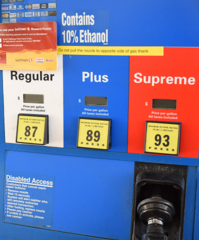
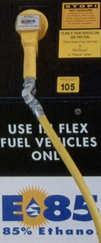
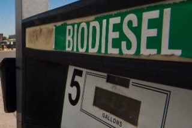

The “Contains 10% ethanol” label means that ethanol has been blended into the petroleum gasoline—10% ethanol and 90% petroleum gasoline.

Pumps marked “E85,” usually in yellow are gasoline that is up to 85% ethanol, sold across the United States. | Photo credit: National Renewable Energy Laboratory.


Going “over the river and through the woods to Grandmother’s house” this Thanksgiving could require a significant amount of gasoline if you’re traveling by car. Before you hit the road to visit relatives or friends, you’ll probably stop at the gas station to fuel up. The Energy Department’s Bioenergy Technologies Office invests in research and development to help commercialize biofuels—liquid fuels produced from plant sources—to reduce America’s dependence on foreign oil, build the economy, and reduce greenhouse gas emissions.
While you’re at the gas pump, pay attention to a few things. There are several biofuel options already available to you today, and the Energy Department is working to bring second-generation biofuel options to a pump near you.
E10

See that “Contains 10% ethanol” label on the gas pump? It may be above or to the side of the pump, and the wording may vary. This label means that ethanol has been blended into the petroleum gasoline—at 10% ethanol and 90% petroleum gasoline. Ethanol is an alcohol-based fuel made from plant materials and has a high octane rating. Ethanol must be blended with petroleum fuel to be used in conventional vehicles. Blends of up to 10% ethanol (E10) are approved for use in all vehicles and in all gasoline transportation, storage, and dispensing infrastructure in the United States. E10 is now sold in every state.
Since the 1990s, ethanol in the United States has been produced almost solely from corn grain; however, that could change, thanks in part to the Energy Department’s Bioenergy Technologies Office. Over the past few years, three cellulosic ethanol biorefineries have been constructed with cost-shared Energy Department funding—INEOS Bio’s Indian River BioEnergy Center, POET-DSM’s Project LIBERTY, and the Abengoa’s Bioenergy Biomass of Kansas. Just last month, DuPont opened its cellulosic ethanol biorefinery in Nevada, Iowa, which was not constructed with Energy Department funding but which uses biofuel conversion technologies developed in part with Energy Department funding awarded to DuPont and National Renewable Energy Laboratory. These innovative biorefineries produce ethanol from non-food sources, including corn husks and stalks and vegetative residue. Once these biorefineries begin producing for the commercial market, cellulosic ethanol could be an option for your E10 gasoline blend.
E85
See a separate pump marked “E85,” usually in yellow? You found gasoline that is up to 85% ethanol, sold across the United States, but in fewer locations than E10.

Unlike E10, E85 requires that you have a flexible fuel vehicle (FFV). “Flex-fuel” vehicles are designed to run on gasoline or any blend of up to 85% ethanol. In some areas, blend pumps are available that allow you to choose your percent ethanol blend. You may actually have a flex-fuel vehicle and not know it—look for a badge either on the outside of your car or on the fuel door, and a yellow gas cap indicating “flex fuel” or “FFV.” You can search for your vehicle in an online list of E85 vehicles by type and model year.
Ethanol is a fuel octane booster, but current flex-fuel vehicles are not able to take full advantage of octane benefits because they are also designed to run on gasoline. The Bioenergy Technologies Office is working with the Vehicle Technologies Office and the national laboratories on a preliminary investigation of E20–E40 ethanol blends (20%–40% ethanol) and how they can be used in advanced engines that would be developed to better utilize high-octane fuel. The greater fuel efficiency from higher octane levels could offset ethanol’s lower energy content compared to petroleum gasoline. In the past, joint vehicle performance studies by the Vehicle Technologies Office and Bioenergy Technologies Office provided information to the U.S. Environmental Protection Agency about the use of E15 (up to 15% ethanol) in conventional vehicles.
B20/Biodiesel
Have a diesel engine? You could purchase a biodiesel blend-fuel at one of many fueling stations. Its properties are similar to petroleum diesel, but like other biofuels, it comes from renewable resources and burns cleaner, emitting fewer pollutants. Look for the B20 label—although diesel engines don’t need to be modified to use it, engines usually run better with a biodiesel blend, most commonly at 20%.

Most biodiesel is produced from vegetable oils, animal fats, and recycled restaurant grease, and is already available on the commercial market.
In the future, renewable diesel could be produced from other bioenergy feedstocks, such as algae and woody crops. Compared to biodiesel, renewable diesel has lower greenhouse gas emissions, can be made from non-food based oils, and is chemically identical to petroleum diesel. The biotechnology company, Solazyme, which received $22 million in Energy Department Recovery Act funding, sold algae-based renewable diesel to consumers in California during a successful one-month trial period in 2012 through renewable fuels distributor, Propel. Bioenergy Technologies Office partners are now working on research, development, and demonstration to drive down the cost of algae-based renewable diesel and make it available nationwide. The Bioenergy Technologies Office is also helping to scale up existing biodiesel and future renewable diesel (from forest materials and municipal solid waste) for large-scale use for military and commercial airplanes through the construction of three biorefineries announced earlier last year. These biorefineries have already received agreements from companies including FedEx and commercial airlines Southwest and United.
“Drop-In” Biofuels
E10 and E85 ethanol blends and biodiesel are all biofuel options you can see today at the pump, and new commercial-scale biorefineries are starting up production of cellulosic ethanol from agricultural residue. Looking ahead, the Bioenergy Technologies Office is focused on research, development, and demonstration of “drop-in” hydrocarbon biofuels—including algae-based fuels—that could be used as a direct replacement for petroleum fuel in conventional cars, instead of being blended in.
The Office’s goal is to validate a modeled price of $3 per gasoline gallon equivalent for this fuel by 2017. National laboratories, university researchers, and pilot and demonstration facilities across the country are working to make the conversion process and supply chain cost-competitive with petroleum fuel. This will be another way we can produce more of our fuel in the United States using renewable resources.
Now that you can take a more informed look at your gas pump and the Energy Department’s role, drive safe and have a happy Thanksgiving!